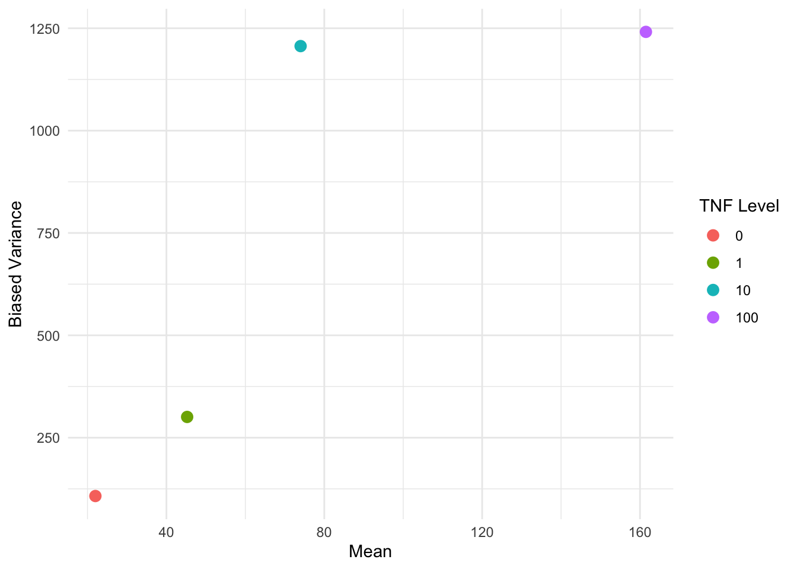
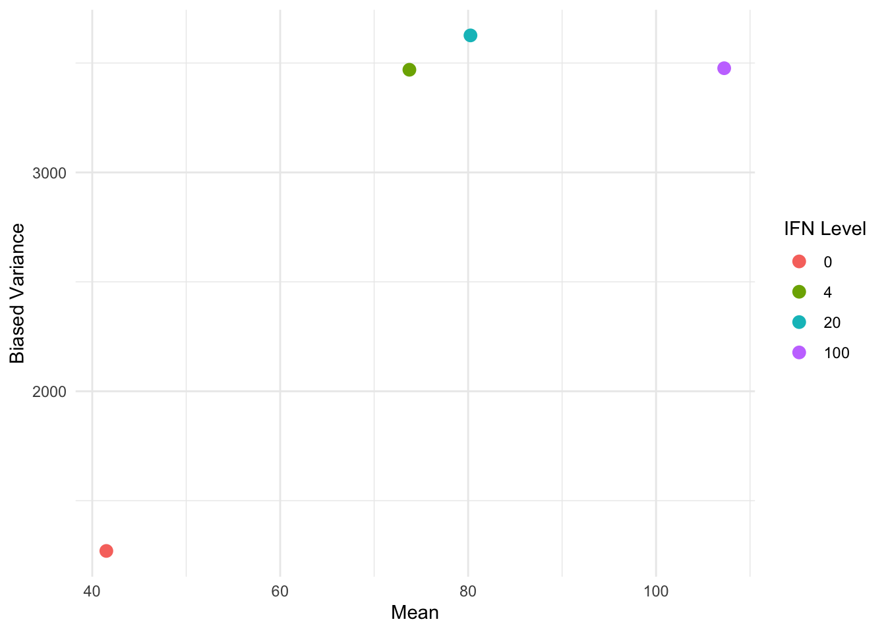

Code
library(conflicted)Fahrmeir and Tutz (2001) Examples 2.3, 2.6, and 2.7
April 1, 2026
As in the previous script, for safety we import the conflicted package first to manage any function name conflicts.
We import the other packages needed to complete the analysis.
Thorough MASS documentation is available in the book Modern Applied Statistics with S (MASS) Venables and Ripley (2002) which is available to you for free.
We now attempt to replicate the results in Fahrmeir and Tutz (2001) Example 2.3 (p. 37). We import and preview the cells data from the Fahrmeir package. The purpose of this dataset is to explore whether the two agents stimulate cell differentiation synergistically (is an interaction between the agents) or independently.
# A tibble: 16 × 3
y TNF IFN
<int> <int> <int>
1 11 0 0
2 18 0 4
3 20 0 20
4 39 0 100
5 22 1 0
6 38 1 4
7 52 1 20
8 69 1 100
9 31 10 0
10 68 10 4
11 69 10 20
12 128 10 100
13 102 100 0
14 171 100 4
15 180 100 20
16 193 100 100All the variables are encoded as integers and so we do not need to manipulate the data types. It is also good practice in RStudio to run ?cells to inspect the documentation for the dataset.
We initially just fit the Poisson GLM as in Ex 2.3.
The default link is the log link, meaning that we assume \(\log(\mu)\) depends linearly on the covariates.
formula = y ~ TNF * IFN: Response variable y modeled with main effects and interaction for TNF and IFN. This is equivalent to y ~ 1 + TNF + IFN + TNF * IFN.family = poisson: Specifies Poisson distribution with default log link functiondata = cells_tbl: Data frame containing the variablesWe inspect the returned coefficients.
Estimate Std. Error z value Pr(>|z|)
(Intercept) 3.4356 0.0638 53.8773 0
TNF 0.0155 0.0008 18.6895 0
IFN 0.0089 0.0010 9.2529 0
TNF:IFN -0.0001 0.0000 -4.2050 0We see that these estimates line up with those reported in Fahrmeir and Tutz (2001) p. 38. Two things should catch our eye as requiring further investigation:
We continue to explore this in Fahrmeir and Tutz (2001) Example 2.6.
A simple explanation for the apparent contradiction in the previous example is that the data is not well explained by the Poisson model. We test the goodness of fit with the deviance and the Pearson \(\chi^2\) statistic using an asymptotic \(\chi^2\) test.
There must be \(16 - 4 = 12\) degrees of freedom, since the saturated model has 16 parameters, and the model we are testing has 4.
We can directly access the deviance and we can calculate the Pearson chi-squared statistic with
[1] 142.4[1] 140.8which are identical to the values reported on page 54 of Fahrmeir and Tutz (2001).
We inspect the covariance matrices of the coefficient estimates
(Intercept) TNF IFN TNF:IFN
(Intercept) 4.066330e-03 -4.169093e-05 -4.449198e-05 4.566589e-07
TNF -4.169093e-05 6.903075e-07 4.566594e-07 -7.700253e-09
IFN -4.449198e-05 4.566594e-07 9.347980e-07 -9.662192e-09
TNF:IFN 4.566589e-07 -7.700253e-09 -9.662192e-09 1.818182e-10 (Intercept) TNF IFN TNF:IFN
(Intercept) 4.066330e-03 -4.169093e-05 -4.449198e-05 4.566589e-07
TNF -4.169093e-05 6.903075e-07 4.566594e-07 -7.700253e-09
IFN -4.449198e-05 4.566594e-07 9.347980e-07 -9.662192e-09
TNF:IFN 4.566589e-07 -7.700253e-09 -9.662192e-09 1.818182e-10The scaled covariance matrix is scaled by the dispersion parameter \(\phi\), but the Poisson model has a fixed dispersion parameter \(\phi= 1\).
We can look for overdispersion as evidence of poor fit. The typical way of creating an estimate \(\hat{\phi}\) for the dispersion parameter \(\phi\), is by dividing the Pearson \(\chi^2\) statistic by the degrees of freedom.
Heuristically, this is not close to a value of 1, which is what we would expect if the Poisson model was a good fit.
For an unknown reason our \(\hat{\phi}\) is not exactly the same as the book (which has 11.734), but it is very close.
We now formally test the goodness of fit by looking at the \(p\)-values of the deviance and Pearson \(\chi^2\) statistics.
Both the deviance test and the Pearson \(\chi^2\) tests reject the null hypothesis that the data are produced from the Poisson model at any reasonable level of significance.
There is an important caveat to this result. The sample size of the data is \(16\), since the data isn’t actually grouped. Since this is equal to the degrees of freedom in the saturated model, the dimensionality of the model grows with more samples. Therefore the asymptotics are not fully valid, since we don’t have a stabilising null distribution. For more information see what the UK biostatistician Jonathan Bartlett says in his blog post.
There is a case to redeem the tests when the mean of the Poisson random variables are large (given by Fahrmeir and Tutz (2001) p. 54 in this example). Heuristically, this is because in this case, the Poisson distribution looks normal (see the Wikipedia page on the Poisson distribution for a visual demonstration) and the log link is approximately linear; recall that for the normal GLM with the identity link, the chi-squared distribution is exact. For more information see also Venables and Ripley (2002) page 187.
Having rejected the Poisson model, we move to a quasi “model-based” (also known as “naive”) approach by loosening the variance structure, but still assuming we can correctly specify it. We start with a linear and overdispersed quasi-Poisson variance structure \(\sigma^2(\mu) = \phi\mu\), and we will try to replicate the results of Table 2.6 on page 54 of Fahrmeir and Tutz (2001) copied below (we have corrected the coefficient estimate -0.001 reported for TNF*IFNin the book to -0.0001 according to our own fits), showing the comparison between the two models:
| Parameter | Poisson, \(\phi = 1\) | Poisson, \(\hat{\phi} = 11.734\) |
|---|---|---|
1 |
3.436 (.0) | 3.436 (.0) |
TNF |
.016 (.0) | .016 (.0) |
IFN |
.009 (.0) | .009 (.0) |
TNF*IFN |
-.0001 (.0) | -.0001 (.22) |
Call:
glm(formula = y ~ TNF * IFN, family = quasipoisson, data = cells_tbl)
Coefficients:
Estimate Std. Error t value Pr(>|t|)
(Intercept) 3.436e+00 2.184e-01 15.727 2.26e-09 ***
TNF 1.553e-02 2.846e-03 5.456 0.000146 ***
IFN 8.946e-03 3.312e-03 2.701 0.019273 *
TNF:IFN -5.670e-05 4.619e-05 -1.227 0.243176
---
Signif. codes: 0 '***' 0.001 '**' 0.01 '*' 0.05 '.' 0.1 ' ' 1
(Dispersion parameter for quasipoisson family taken to be 11.73534)
Null deviance: 707.03 on 15 degrees of freedom
Residual deviance: 142.39 on 12 degrees of freedom
AIC: NA
Number of Fisher Scoring iterations: 4Note that since the variance structure is assumed to be correct, the standard errors are not derived using the more robust sandwich covariance matrix.
We can compare the coefficients with those from the full Poisson GLM.
Estimate Std. Error z value Pr(>|z|)
(Intercept) 3.43564 0.06377 53.87730 0e+00
TNF 0.01553 0.00083 18.68948 0e+00
IFN 0.00895 0.00097 9.25287 0e+00
TNF:IFN -0.00006 0.00001 -4.20498 3e-05 Estimate Std. Error t value Pr(>|t|)
(Intercept) 3.43564 0.21845 15.72744 0.00000
TNF 0.01553 0.00285 5.45568 0.00015
IFN 0.00895 0.00331 2.70102 0.01927
TNF:IFN -0.00006 0.00005 -1.22748 0.24318We see that the coefficients are the exact same and match Table 1, but the standard errors between the two models are significantly different. This is because the estimating equations in both the standard and quasi-Poisson models are identical, giving us identical coefficient estimates, but the dispersion parameter effects our standard errors.
Moreover, the \(p\)-values reported for the coefficients in glm_quasi_poisson_summary are calibrated based on the \(t_{n-p}= t_{16-4}\) distribution, which are a bit different from those in Table 1 calibrated only based on a standard normal distribution. There is an argument to be made that the \(t\)-distribution is a better approximation to the null distribution, because the dispersion is only estimated now. For example, taking the rescaled coefficient estimate \(-1.22748\) for TNF:IFN, calibrating based on the standard normal gives
, while calibrating based on \(t_{12}\) gives
As with the typical glm() and lm() analysis, we can still use the standard anova() function:
Analysis of Deviance Table
Model: quasipoisson, link: log
Response: y
Terms added sequentially (first to last)
Df Deviance Resid. Df Resid. Dev F Pr(>F)
NULL 15 707.03
TNF 1 468.60 14 238.43 39.9305 3.837e-05 ***
IFN 1 78.27 13 160.16 6.6696 0.02398 *
TNF:IFN 1 17.78 12 142.39 1.5147 0.24201
---
Signif. codes: 0 '***' 0.001 '**' 0.01 '*' 0.05 '.' 0.1 ' ' 1which compares nested models by comparing the quasi log-likelihoods (Dunn and Smyth (2018) p.320), and extract the various residuals:
# A tibble: 16 × 4
default deviance working pearson
<dbl> <dbl> <dbl> <dbl>
1 -4.16 -4.16 -0.646 -3.60
2 -2.73 -2.73 -0.441 -2.50
3 -3.08 -3.08 -0.461 -2.81
4 -4.68 -4.68 -0.487 -4.24
5 -1.80 -1.80 -0.302 -1.70
6 0.907 0.907 0.163 0.931
7 2.21 2.21 0.380 2.33
8 -0.896 -0.896 -0.101 -0.881
9 -0.897 -0.897 -0.145 -0.875
10 4.47 4.47 0.813 4.98
11 3.66 3.66 0.609 3.99
12 4.47 4.47 0.527 4.82
13 -3.91 -3.91 -0.305 -3.69
14 1.79 1.79 0.150 1.83
15 1.82 1.82 0.149 1.87
16 -0.748 -0.748 -0.0520 -0.742We now also expect the scaled covariance matrix to be different from the unscaled covariance matrix, since the dispersion parameter is no longer fixed to 1.
(Intercept) TNF IFN TNF:IFN
(Intercept) 4.066330e-03 -4.169093e-05 -4.449198e-05 4.566589e-07
TNF -4.169093e-05 6.903075e-07 4.566594e-07 -7.700253e-09
IFN -4.449198e-05 4.566594e-07 9.347980e-07 -9.662192e-09
TNF:IFN 4.566589e-07 -7.700253e-09 -9.662192e-09 1.818182e-10 (Intercept) TNF IFN TNF:IFN
(Intercept) 4.771979e-02 -4.892574e-04 -5.221287e-04 5.359050e-06
TNF -4.892574e-04 8.100996e-06 5.359056e-06 -9.036512e-08
IFN -5.221287e-04 5.359056e-06 1.097018e-05 -1.133891e-07
TNF:IFN 5.359050e-06 -9.036512e-08 -1.133891e-07 2.133699e-09We can do a sanity check in order to determine if we can recover the scaled covariance matrix
(Intercept) TNF IFN TNF:IFN
(Intercept) 4.771979e-02 -4.892574e-04 -5.221287e-04 5.359050e-06
TNF -4.892574e-04 8.100996e-06 5.359056e-06 -9.036512e-08
IFN -5.221287e-04 5.359056e-06 1.097018e-05 -1.133891e-07
TNF:IFN 5.359050e-06 -9.036512e-08 -1.133891e-07 2.133699e-09This looks good!
glm() does not match our Pearson residuals estimate
We can see that the dispersion estimate reported by glm() does not exactly match our own calculation based on Pearson residuals.
We can recover the exact number reported by glm() as follows:
The dispersion estimate provided by glm() actually leverages the “working residuals” and the IWLS weights. So it is not the same as our standard estimate based on Pearson residuals! Note that the weights here are same as glm_poisson$weights, the weights by assuming \(\phi = 1\) under the full likelihood model.
For a detailed mathematical explanation of why this difference exists, see Appendix: Estimating the Dispersion with Working Residuals.
We can further explore different variance structures beyond just the linear structure \(\sigma^2(\mu) = \phi \mu\).
We can get some visual ideas by plotting the variance against mean per covariate.
var() computes the unbiased variance estimate by default. To visually reproduce the results on p. 59 of Fahrmeir and Tutz (2001), we have to use the biased variance estimate.
variance_summary_by_TNF <- cells_tbl |>
group_by(TNF) |>
summarize(
est_var = var(y) * 3 / 4,
est_mean = mean(y),
.groups = "drop"
)
ggplot(variance_summary_by_TNF, aes(x = est_mean, y = est_var, color = factor(TNF))) +
geom_point(size = 3) +
labs(
x = "Mean",
y = "Biased Variance",
color = "TNF Level"
) +
theme_minimal()
We can do a similar plot by IFN instead of TNF:
variance_summary_by_IFN <- cells_tbl |>
group_by(IFN) |>
summarize(
est_var = var(y) * 3 / 4,
est_mean = mean(y),
.groups = "drop"
)
ggplot(variance_summary_by_IFN, aes(x = est_mean, y = est_var, color = factor(IFN))) +
geom_point(size = 3) +
labs(
x = "Mean",
y = "Biased Variance",
color = "IFN Level"
) +
theme_minimal()
ggplot(data, aes(...)): Initialize plot with aesthetic mappings (x, y, color, size, etc.)
color = factor(TNF): Convert numeric to factor for discrete coloringgeom_point(): Add scatter plot layerlabs(): Set axis and legend labels (color = "TNF Level" customizes legend title)theme_minimal(): Apply clean theme+ (similar to piping)The equivalent base R code to create the same scatter plot would be:
The non-linear relationship between the variance and the means suggests that we should consider some non-linear variance structures. In particular, we compare:
We leave the linear + quadratic case for further exploration.
We will now use the gee() function for “robust inference”. This means that we do not assume that the variance structure is correctly specified, but instead use the sandwich variance estimator for inference. We now try to partially replicate Table 2.7 from Fahrmeir and Tutz (2001) (p.60), adapted below:
| Parameter | \(\sigma^2(\mu) = \phi\mu\) | \(\sigma^2(\mu) = \phi\mu^2\) |
|---|---|---|
1 |
3.436 (0.0) | 3.394 (0.0) |
TNF |
0.016 (0.0) | 0.016 (0.0) |
IFN |
0.009 (0.0) | 0.009 (0.003) |
TNF*IFN |
-0.001 (0.115) | -0.001 (0.099) |
| \(\hat{\phi}\) | 11.734 | 0.243 |
We start by considering the linear variance structure \(\sigma^2(\mu) = \phi \mu\).
Beginning Cgee S-function, @(#) geeformula.q 4.13 98/01/27running glm to get initial regression estimate (Intercept) TNF IFN TNF:IFN
3.435636e+00 1.552810e-02 8.946132e-03 -5.669994e-05 gee() Syntax Explanation
id: Cluster identifier for which observations are correlated. Here seq_len(nrow(cells_tbl)) is same as 1:nrow(cells_tbl) and creates unique IDs (1, 2, …, n) for each row, treating observations as independentfamily = quasi(variance = "...", link = "..."): Specifies the assumed variance function and link function
variance = "mu": Linear variance structure \(\sigma^2(\mu) = \phi \mu\)link = "log": Log link function
GEE: GENERALIZED LINEAR MODELS FOR DEPENDENT DATA
gee S-function, version 4.13 modified 98/01/27 (1998)
Model:
Link: Logarithm
Variance to Mean Relation: Poisson
Correlation Structure: Independent
Call:
gee(formula = y ~ TNF * IFN, id = seq_len(nrow(cells_tbl)), data = cells_tbl,
family = quasi(variance = "mu", link = "log"))
Summary of Residuals:
Min 1Q Median 3Q Max
-44.70834 -14.92057 -6.49156 22.60660 44.16668
Coefficients:
Estimate Naive S.E. Naive z Robust S.E. Robust z
(Intercept) 3.435636e+00 0.2184496319 15.727361 1.851532e-01 18.555643
TNF 1.552810e-02 0.0028462236 5.455686 2.329065e-03 6.667096
IFN 8.946132e-03 0.0033121255 2.701024 3.242937e-03 2.758652
TNF:IFN -5.669994e-05 0.0000461918 -1.227489 3.598629e-05 -1.575599
Estimated Scale Parameter: 11.73516
Number of Iterations: 1
Working Correlation
[,1]
[1,] 1We can see now that the dispersion estimate is the same as the one we manually calculated based on Pearson residuals. We compare the coefficients and standard errors to the previous models:
Estimate Naive S.E. Naive z Robust S.E. Robust z
(Intercept) 3.4356 0.2184 15.7274 0.1852 18.5556
TNF 0.0155 0.0028 5.4557 0.0023 6.6671
IFN 0.0089 0.0033 2.7010 0.0032 2.7587
TNF:IFN -0.0001 0.0000 -1.2275 0.0000 -1.5756 Estimate Std. Error t value Pr(>|t|)
(Intercept) 3.4356 0.2184 15.7274 0.0000
TNF 0.0155 0.0028 5.4557 0.0001
IFN 0.0089 0.0033 2.7010 0.0193
TNF:IFN -0.0001 0.0000 -1.2275 0.2432The coefficients are be identical to the previous models, since the same score function is being solved. We can see that the naive standard errors are those assuming the variance structure is correct, while the robust standard errors are those using the sandwich variance estimator.
The sandwich variance estimator is “robust” because it is guaranteed to be asymptotically correct even if the variance structure is misspecified. If we incorrectly assume \(\sigma^2(\mu) = \phi\mu\) when the true structure is different, the naive standard errors will be biased, but the sandwich estimator will still provide valid inference.
We can then calculate the \(p\)-values corresponding to the naive and robust standard errors.
diag(...) extracts the diagonal elements from a matrix (variance-covariance matrix in this case). Standard errors are obtained by taking the square root of these diagonal elements: sqrt(diag(covariance_matrix)). Dividing the coefficient by its standard error gives the z-value.
Assuming we have correctly specified the variance structure (naive approach):
# A tibble: 4 × 3
coefficient z_value p_value
<chr> <dbl> <dbl>
1 (Intercept) 15.7 0
2 TNF 5.46 0
3 IFN 2.70 0.007
4 TNF:IFN -1.23 0.22 Without assuming the variance structure is correct (robust approach):
# A tibble: 4 × 3
coefficient z_value p_value
<chr> <dbl> <dbl>
1 (Intercept) 18.6 0
2 TNF 6.67 0
3 IFN 2.76 0.006
4 TNF:IFN -1.58 0.115Our manually computed robust \(p\)-values match the ones reported for the linear variance structure in Fahrmeir and Tutz (2001) as in Table 2.
Expand the following note for an alternative implementation of GEE models using the geepack package.
geepack Implementation (Non-examinable content)
There is an alternative package geepack which also implements GEE models. Under the hood, there are some small differences in implementation between gee and geepack.
Call:
geeglm(formula = y ~ TNF * IFN, family = poisson(link = "log"),
data = cells_tbl, id = seq_len(nrow(cells_tbl)))
Coefficients:
(Intercept) TNF IFN TNF:IFN
3.435636e+00 1.552810e-02 8.946132e-03 -5.669994e-05
Degrees of Freedom: 16 Total (i.e. Null); 12 Residual
Scale Link: identity
Estimated Scale Parameters: [1] 8.801367
Correlation: Structure = independence
Number of clusters: 16 Maximum cluster size: 1
Call:
geeglm(formula = y ~ TNF * IFN, family = poisson(link = "log"),
data = cells_tbl, id = seq_len(nrow(cells_tbl)))
Coefficients:
Estimate Std.err Wald Pr(>|W|)
(Intercept) 3.436e+00 1.852e-01 344.312 < 2e-16 ***
TNF 1.553e-02 2.329e-03 44.450 2.61e-11 ***
IFN 8.946e-03 3.243e-03 7.610 0.0058 **
TNF:IFN -5.670e-05 3.599e-05 2.483 0.1151
---
Signif. codes: 0 '***' 0.001 '**' 0.01 '*' 0.05 '.' 0.1 ' ' 1
Correlation structure = independence
Estimated Scale Parameters:
Estimate Std.err
(Intercept) 8.801 1.944
Number of clusters: 16 Maximum cluster size: 1 Finally, we try the quadratic variance structure \(\sigma^2(\mu) = \phi \mu^2\).
Beginning Cgee S-function, @(#) geeformula.q 4.13 98/01/27running glm to get initial regression estimate(Intercept) TNF IFN TNF:IFN
3.393e+00 1.626e-02 9.433e-03 -6.011e-05
GEE: GENERALIZED LINEAR MODELS FOR DEPENDENT DATA
gee S-function, version 4.13 modified 98/01/27 (1998)
Model:
Link: Logarithm
Variance to Mean Relation: Gamma
Correlation Structure: Independent
Call:
gee(formula = y ~ TNF * IFN, id = seq_len(nrow(cells_tbl)), data = cells_tbl,
family = quasi(variance = "mu^2", link = "log"))
Summary of Residuals:
Min 1Q Median 3Q Max
-49.322 -16.653 -6.135 17.683 43.290
Coefficients:
Estimate Naive S.E. Naive z Robust S.E. Robust z
(Intercept) 3.393e+00 1.863e-01 18.2156 1.834e-01 18.499
TNF 1.626e-02 3.707e-03 4.3861 2.284e-03 7.118
IFN 9.433e-03 3.651e-03 2.5840 3.158e-03 2.987
TNF:IFN -6.011e-05 7.265e-05 -0.8274 3.638e-05 -1.652
Estimated Scale Parameter: 0.2435
Number of Iterations: 1
Working Correlation
[,1]
[1,] 1[1] 0.244The coefficient estimates almost match those in Fahrmeir and Tutz (2001) Table 2.7 on page 60. For a final sanity check, we manually compute both the naive and robust \(Z\) and \(p\)-values.
gee_mu2_inference <- tibble(
coefficient = names(gee_mu2$coefficients),
naive_z = gee_mu2$coefficients / sqrt(diag(gee_mu2$naive.variance)),
naive_p = round(2 * pnorm(abs(naive_z), lower.tail = FALSE), 3),
robust_z = gee_mu2$coefficients / sqrt(diag(gee_mu2$robust.variance)),
robust_p = round(2 * pnorm(abs(robust_z), lower.tail = FALSE), 3)
)
gee_mu2_inference# A tibble: 4 × 5
coefficient naive_z naive_p robust_z robust_p
<chr> <dbl> <dbl> <dbl> <dbl>
1 (Intercept) 18.2 0 18.5 0
2 TNF 4.39 0 7.12 0
3 IFN 2.58 0.01 2.99 0.003
4 TNF:IFN -0.827 0.408 -1.65 0.099Our manually computed robust \(p\)-values match the ones reported for the quadratic variance structure in Fahrmeir and Tutz (2001) as in Table 2.
packages <- c("conflicted", "dplyr", "Fahrmeir", "gee", "geepack", "ggplot2", "MASS")
for (pkg in packages) {
cit <- citation(pkg)
# Check if multiple citations
if (length(cit) > 1) {
cat("- **", pkg, "**:\n", sep = "")
for (i in seq_along(cit)) {
cit_text <- format(cit[i], style = "text")
cat(" - ", cit_text, "\n\n", sep = "")
}
} else {
cit_text <- format(cit, style = "text")
cat("- **", pkg, "**: ", cit_text, "\n\n", sep = "")
}
}conflicted: Wickham H (2023). conflicted: An Alternative Conflict Resolution Strategy. R package version 1.2.0, https://github.com/r-lib/conflicted, https://conflicted.r-lib.org/.
dplyr: Wickham H, François R, Henry L, Müller K, Vaughan D (2026). dplyr: A Grammar of Data Manipulation. R package version 1.2.0, https://github.com/tidyverse/dplyr, https://dplyr.tidyverse.org.
Fahrmeir: Halvorsen cbKB (2016). Fahrmeir: Data from the Book “Multivariate Statistical Modelling Based on Generalized Linear Models”, First Edition, by Ludwig Fahrmeir and Gerhard Tutz. R package version 2016.5.31.
gee: Carey VJ (2024). gee: Generalized Estimation Equation Solver. R package version 4.13-29.
geepack:
Halekoh U, Højsgaard S, Yan J (2006). “The R Package geepack for Generalized Estimating Equations.” Journal of Statistical Software, 15/2, 1-11.
Yan J, Fine JP (2004). “Estimating Equations for Association Structures.” Statistics in Medicine, 23, 859-880.
Yan J (2002). “geepack: Yet Another Package for Generalized Estimating Equations.” R-News, 2/3, 12-14.
Xu, Z., Fine, P. J, Song, W., Yan, J. (2025). “On GEE for mean-variance-correlation models: Variance estimation and model selection.” Statistics in Medicine, 44, 1-2.
ggplot2: Wickham H (2016). ggplot2: Elegant Graphics for Data Analysis. Springer-Verlag New York. ISBN 978-3-319-24277-4, https://ggplot2.tidyverse.org.
MASS: Venables WN, Ripley BD (2002). Modern Applied Statistics with S, Fourth edition. Springer, New York. ISBN 0-387-95457-0, https://www.stats.ox.ac.uk/pub/MASS4/.